HERO
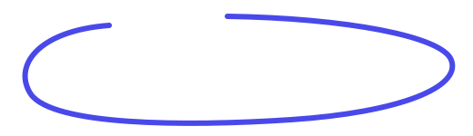
앱 서비스 디자인 시안 제안서
주류 주문 앱 HERO · 홈·장바구니 화면 UI 시안 (모바일·태블릿)
HERO E-Order · 2025
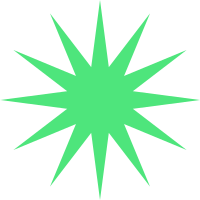
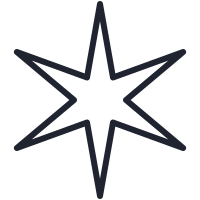

앱 서비스 디자인 시안 제안서
주류 주문 앱 HERO · 홈·장바구니 화면 UI 시안 (모바일·태블릿)
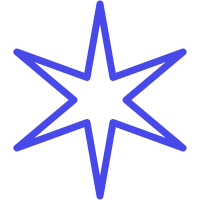
고정된 디자인 정책 대신, 의사결정 계층이 선호하는 톤·컬러 성향을 설계 기준으로 정의했습니다.
브랜드별 전략 차이를 고려한 디자인 설계를 기준으로 합니다.
명도·채도를 높인 선명한 컬러로 밝고 활기찬
인상을 구현합니다. 브랜드 정체성과 일치하는 톤을 기준으로 삼았습니다.
테라 그린을 메인, 블루를 베이스,
핑크를 포인트로 운용합니다. 세 컬러 모두
고채도 계열로 통일감을 확보합니다.
저명도·저채도와 탁하거나 바랜 톤은 배제합니다. 가독성과 브랜드 인지를 저해하는 요소를 사전
차단합니다.
블루를 베이스로 정보 위계를 강화한 안정형 UI입니다. 고채도 유지와 핑크 포인트로 가독성과 활력을 함께 확보합니다.
정보 위계·신뢰감이 강점입니다. 폭넓은 연령층에 안정적으로 안착하나, 브랜드 각인은 상대적으로 약합니다.
테라 그린을 중심으로 브랜드 인지를 강조한 직관형 UI입니다. 로고 기반 탐색으로
상품 식별 효율을 높입니다.
브랜드 인지·탐색 효율이 강점입니다. 신규 유입에 유리하나, 고채도
사용 시 시각 피로도 관리가 필요합니다.
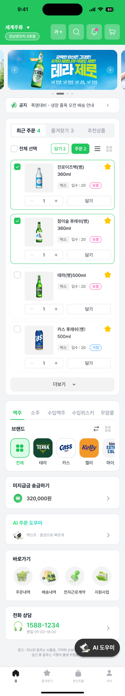
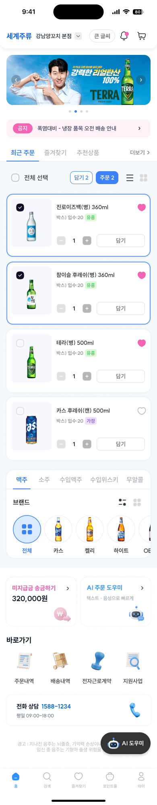
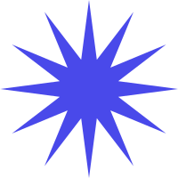
블루를 베이스 컬러로 정보 위계를 구조화하고, 핑크 포인트로 즐겨찾기·미결제 등 상태 정보를 구분했습니다. 고채도 유지로 장시간 발주 시에도 시인성을 확보합니다.
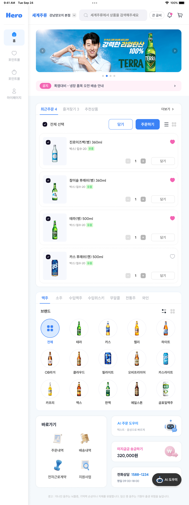
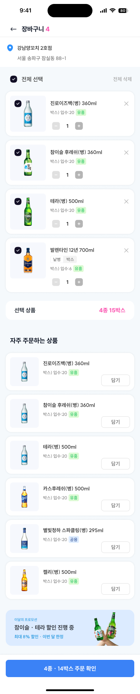
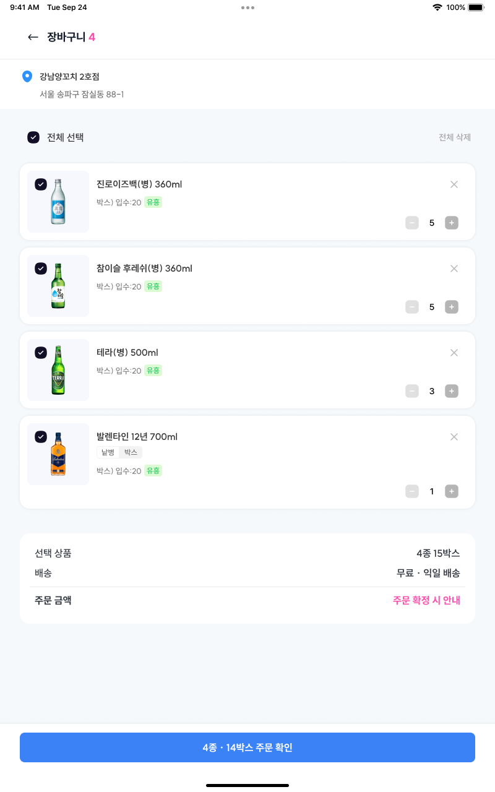
메인 컬러 테라 그린으로 브랜드 일관성을 확보하고, 실제 로고와 그린 CTA로 탐색·행동 동선을 명확히 했습니다. 블루·핑크는 보조 포인트로 톤을 통일합니다.
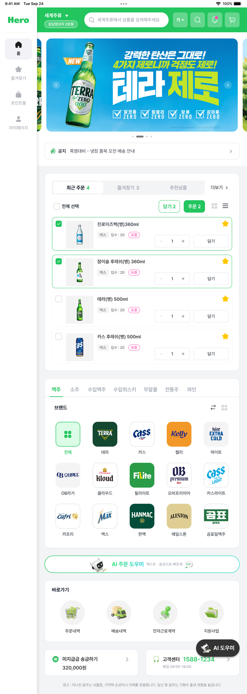
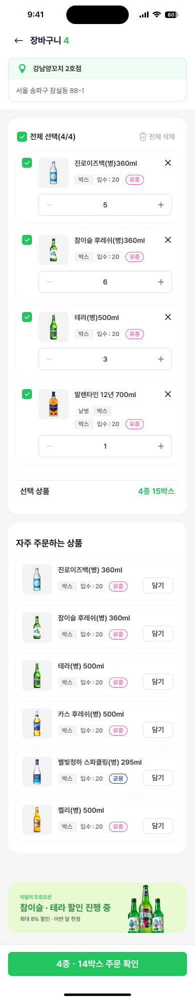
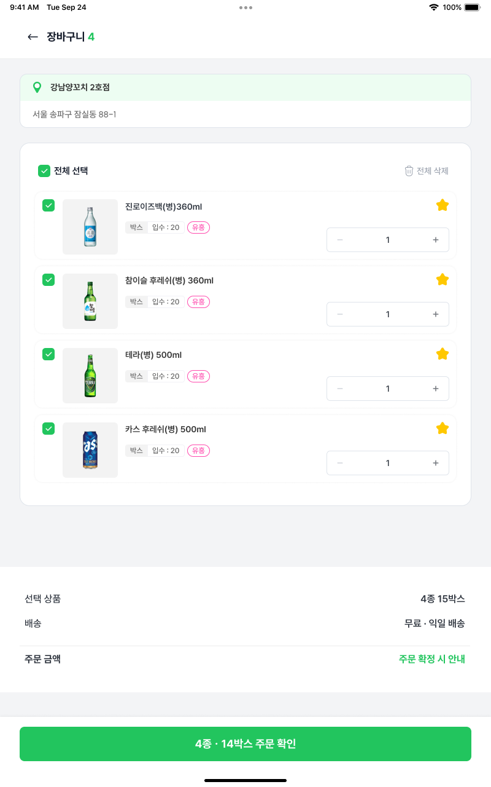
피드백 적용 후 타겟 사용자·브랜드
전략 기준으로 작업 방향을 확정합니다.
확정안을 상세·검색·주문내역 등 전체 화면에 시스템으로 확장합니다.
프로토타입 사용성 검증 후 개발 이관을
진행합니다.